An Imperfect Guide to Imperfect Reproducibility
Gabriel Becker
Twitter: @groundwalkergmb, Github:@gmbecker
Intro
Who I Am
Gabe Becker
Twitter: @groundwalkergmb, GitHub: gmbecker
What I do
- Research reproducibility and related issues
- Contribute^ to the R language itself
^ I collaborate with, but am not a member of, the R-core development team.
Who I Was
Formerly Scientist at Genentech Research
Some content in this talk was developed (by me) while at, and is copyright Genentech, Inc. Used with permission.
What I'll Be Talking About
- Theory - mental models
- Reproducibility - what it does and doesn't give us
- Generalizing Reproducibility
- Practice - what you can do now to improve your work
I Wish Reproducibility Didn't Matter
So Many Things Would Already Be Solved
Energy (Cold Fusion)

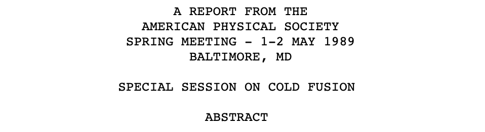

Personalized Cancer Treatment
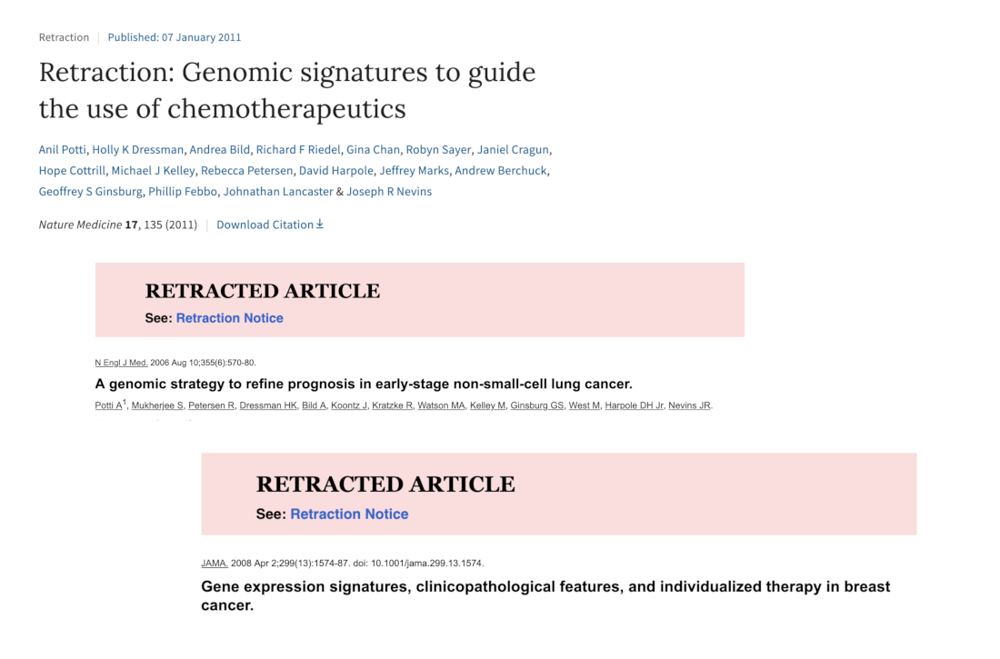
Economics
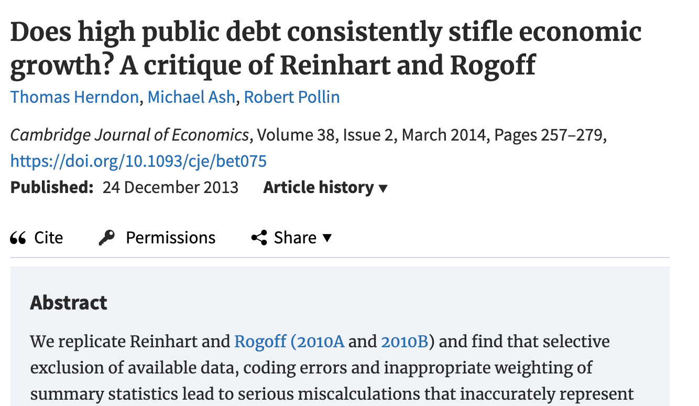
Aliens
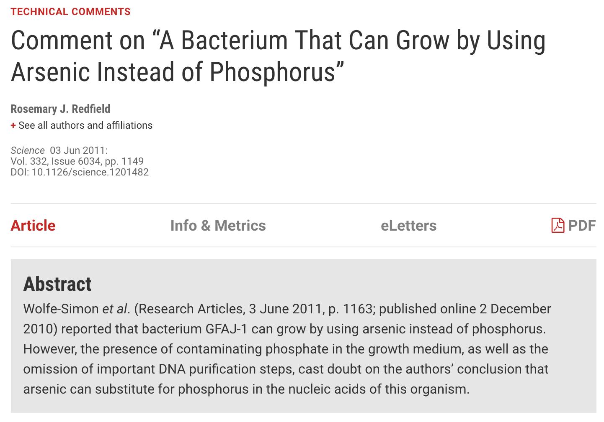
But We're Stuck In The Real World
And none of those claims were true^
^To the best of our current knowledge
(Computational) Reproducibility Is Not The Point
Knowledge Management
Reproducibility
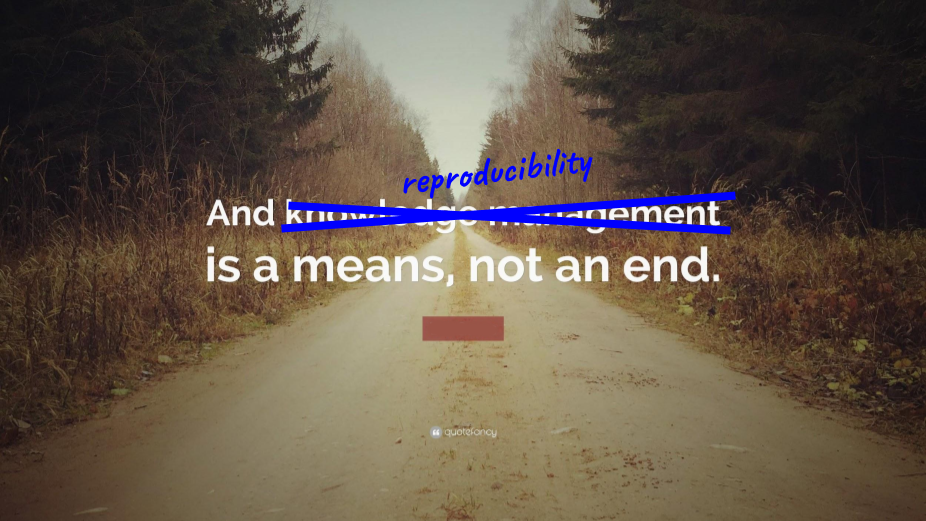
So To Recap
- The world would be better if all results were reproducible
- I don't really care if your results are reproducible
Seem Like A Contradiction?
What Do We Really Want?
Results Are No Use To Us If They're Not Useful
But How Does Reproducting a Result Make It Useful?
We Want
Results we can understand and feel confident using (Gavish)
- Incorporating them into our overall understanding
- Extending or directly utilizing them in our own work
- Talking about them at dinner parties
1 Gavish and Donoho, A Universal Identifier for Computational Results, Procedia Computer Science 4, 2011
Trust, Verification and Guarantees
Ways We Can Trust Results
- Trust in Reporting - result is accurately reported
- Trust in Implementation - analysis code successfully implements chosen methods
- Statistical Trust - data and methods are (still) appropriate
- Scientific Trust - result convincingly supports claim(s) about underlying systems or truths
Reproducibility As A Trust Scale

Source: Gabriel Becker, copyright Genentech Inc.
What Does Strict Reproduction Prove?
It confirms^ the original analyst(s)
- Got the result they say they got
- By applying the code they provided
- To the input data they identified
- In the environment specified
And ensures you have the artifact itself
^ technically it does not confirm these in the deductive sense, rather proves them in the "beyond a reasonable doubt" sense.
A Brief Thought Experiment
Imagine an Independent, Trusted System Which
- Accepts code and data, and environment
- Runs the code
- Saves and publishes results and associates them with code and env
- Deletes the data (if necessary)
This Would Provide Guarantees
Very similar (at least) to those gained by manual, strict reproduction,
without requiring us to actually recreate the result at an arbitrary later date.
Reproducibility Isn't Everything - A Case Study
DESeq Paper
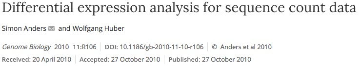
It's Reproducible!
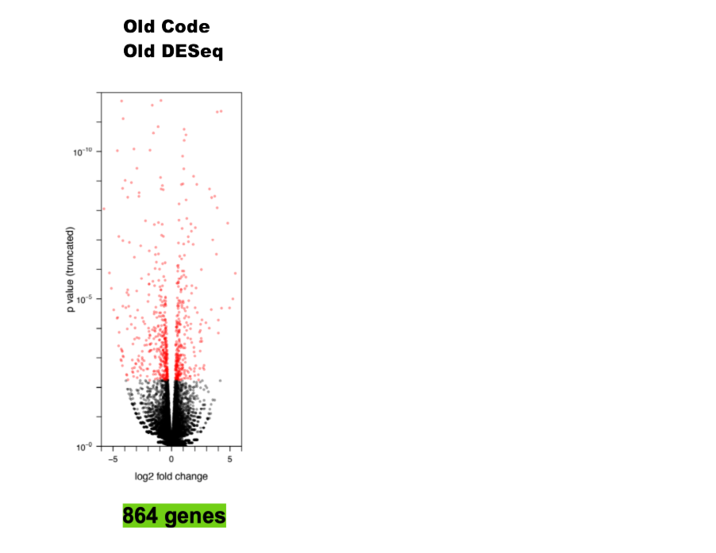
Source: Gabriel Becker, copyright Genentech Inc.
Not The Whole Story
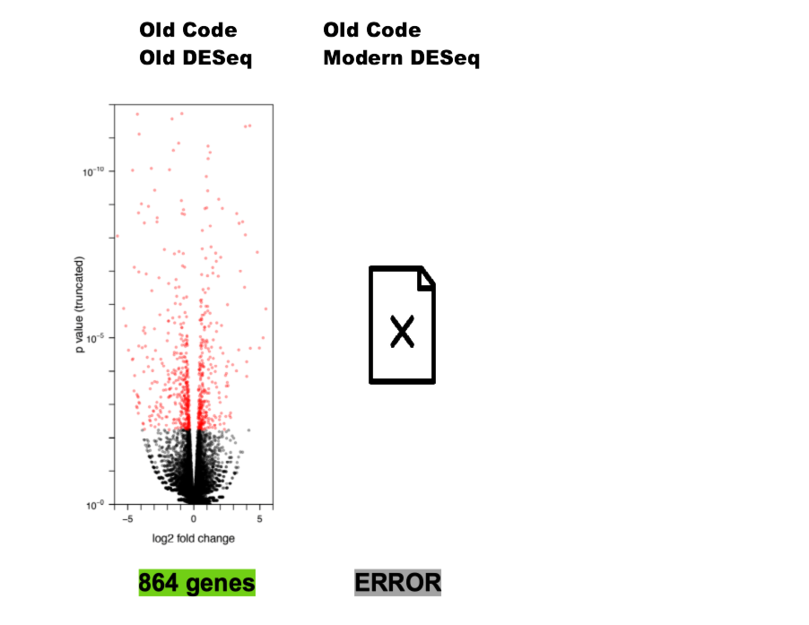
Source: Gabriel Becker, copyright Genentech Inc.
Really Not The Whole Story
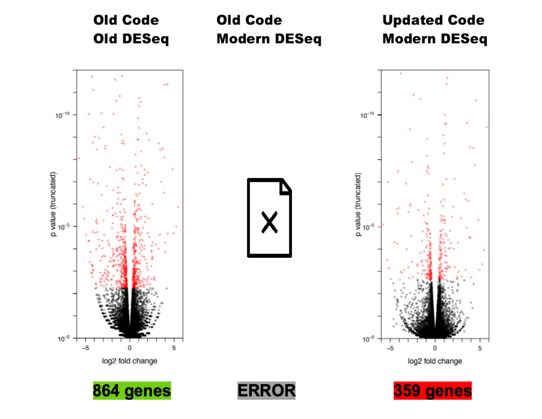
Source: Gabriel Becker, copyright Genentech Inc.

Generalized Reproducibility
Reproducibility is great, but by itself it is neither as necessary nor as sufficient as many seem to think.
– Me (and, like, other smart people too probably)
Topics In Generalized Reproducibility
- Comparability
- Currency
- Completeness
- Provenance
Comparability
Individual "Data Science" Workflow
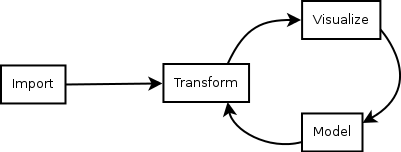
credit: Wickham
Collaboration Is Core
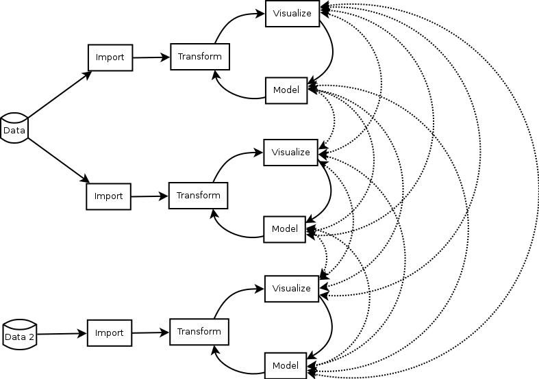
Source: Gabriel Becker, copyright Genentech Inc.
Different Versions
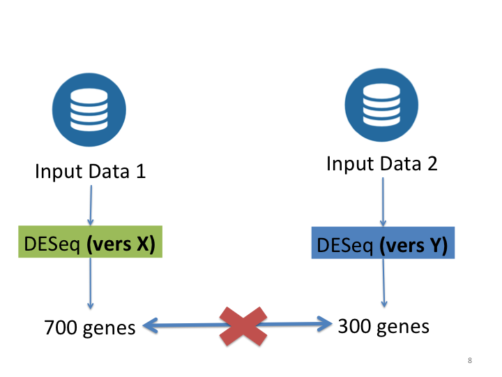
Source: Gabriel Becker, copyright Genentech Inc.
Same Versions
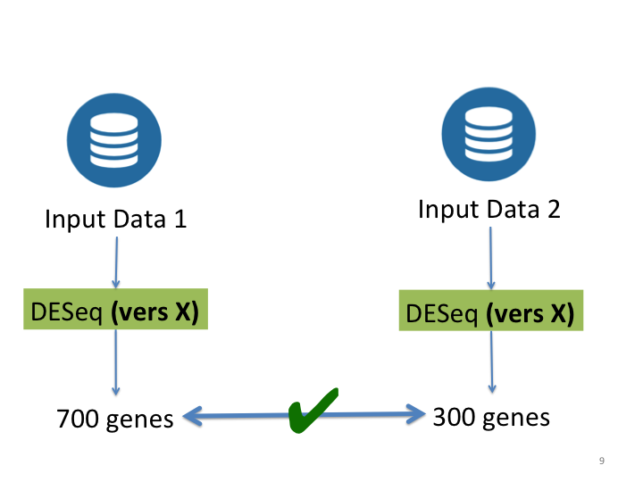
Source: Gabriel Becker, copyright Genentech Inc.
Currency
Recall
Source: Gabriel Becker, copyright Genentech Inc.
Bleeding Edge Methods
- Called this for a reason
- Continue to be refined
- Likely won't stay state of the art
- May not even remain valid
No Hard-And-Fast Rule, But Generally
- Modern versions take precedence
- skeptical of genes in the 864 but not the 359
- Modern methods take precedence^
^ By how much depends on why the old method fell out of favor
Note
The Currency concern is very real in Bioinformatics, Deep Learning, and other fast moving settings. Its not really a concern when using a "classical" method (GLMs, Random Forests, etc).
Completeness
Literate Statistical Practice
[The resulting document] should describe results and lessons learned … as well as a means to reproduce all steps, even those not used in a concise reconstruction, which were taken in the analysis.
– Rossini, Literate Statistical Practice (emphasis mine)
Translation

Provenance
Provenance
the source or origin of an object; its history and pedigree; a record of the ultimate derivation and passage of an item through its various owners
– Oxford English Dictionary
Knowing a Result's Provenance Can Help Us
- Gain insights into the reasoning used to create it,
- verify acceptable procedures and methods were used, and
- know how to reproduce it.
Paraphrase of Friere et al. in Provenance for Computational Tasks: A Survey, Computing in Science & Engineering. 2008
Result Provenance Includes Input Data Provenance
Reproducibility In Practice
In theory there is no difference between theory and practice; in practice there is.
– Unattributed
A "Slightly Out-of-Order" Reproduction Process
0. No Way To Get/Recreate Code and Data?

1. Works With Modern SW Versions
2. Try To Recreate Original Environment
3. Worked In 'Original' Env, We're Good!

4. But Modern Results Disagree?
5. What Now?
We can
- Take the modern results and move forward using them
- Apply other methods to look for corroboration
- Throw up our hands and switch to a field that uses established classical methods
Things You Can Do Now
Script
Scripted Analyses
Manual Steps
Which Would You Rather Be Tested On?
- How the chicken crossed the road, or
- How many licks it took
Versions and File Naming


Avoid Encoding Metadata Solely In Filenames
- Version
thesis_final_revised_final_v2.Rmd
- Species/Gene/etc
mydata_BRAF_mut_only.dat
- Timestamp
mydata_as_of_2018_03_03.dat
Version Control
Literate Analyses
Use rmarkdown, knitr, or Sweave
This gets trust in reporting taken care of^ right away, and its super easy.
^absent actual misconduct, ie editing output files manually
Want to Use Jupytr/Rmarkdown Notebooks?
You must go watch or read Joel Grus' fantastic talk first
Watch: https://www.youtube.com/watch?v=7jiPeIFXb6U
Read: https://docs.google.com/presentation/d/1n2RlMdmv1p25Xy5thJUhkKGvjtV-dkAIsUXP-AL4ffI/
3 Rules If You Still Want To Use Notebooks
- Always run them start to finish before publication
- Never fully trust output in a notebook that wasn't run start to finish
- Always. Run. Them. Start. To. Finish. Before. Publishing.
Sharing
Current State

Current State
Authors for only ~ 44% (36%, 50%) of papers in Science shared both code and data 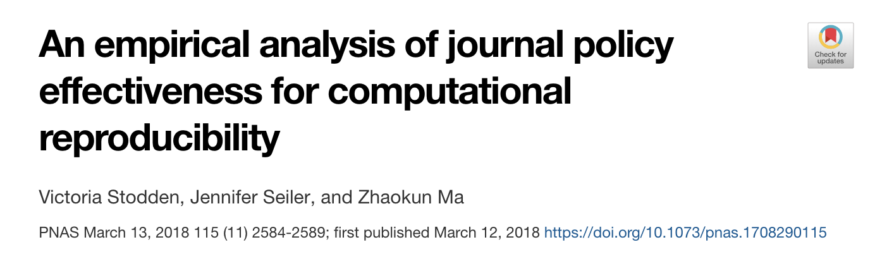
Share Your Code!
- If it's right no one cares how ugly it is
- If it's wrong, readers deserve to know
- And you do, too
Share Your Data (If Ethically Allowable)
When to share data is a tricky question.
But answers of "never" and "only once its obsolete/irrelevant" make you the villain of the piece.
Publish Science
As if you, personally, will need to understand, evaluate, use, and extend your result in 5 years, working only from published materials, having lost all personal materials.
Environment Recreation
Environment Recreation
Crucial for both multi-analyst collaboration and for strict reproduction
Remember to think about currency
Recreating/Distributing R Package Libraries
- switchr
- packrat
- MRAN snapshots
Docker For Reproducibility
Its Easy
- Boettiger and Eddelbuettel, An Introduction to Rocker: Docker Containers for R, The R Journal, 2017
- See Also: Bioconductor AMIs http://bioconductor.org/help/bioconductor-cloud-ami/
Confession
mybinder.org
Check out http://mybinder.org
- Makes your code runnable by others
- Uses docker
- Careful of changing dep version in images across time
Provenance-lite
Aspire To
- Know where your data came from
- Pass that information along with you results (and code)
(Even if imperfectly)
Publishing Results
What To Include
- Code (+ detailed description of any manual steps)
- Data (if you can)
- Data Provenance (if you have it)
- Version/environment info
Consider Open Access When You Can
Not a simple issue, but ask yourself how can a result be useful to people who can't even read about it?
Wrap-up and Conclusions
Think About What you Actually Want
And whether/how you can
- Get it
- Provide it to your readers
Reproducibility is NOT Valueless
But it is most usefully viewed within a larger, more nuanced context.
Share Your Code and Data (If Possible)
And don't be assholes to others who do the same. Even when you find problems in it.
Publish Science
You'd be able to trust if it came out of a lab you don't know.
Selected (and Incomplete) Further Readings
Compendiums
Gentleman and Temple Lang, Statistical Analyses and Reproducible Research, Bioconductor Working Papers, 2014
Marwick, Boettiger and Mullen, Packaging Data Analytical Work Reproducibly Using R (and Friends), The American Statistician, 2018
FAIR data
Wilkinson et al., The FAIR Guiding Principles for scientific data management and stewardship, Scientific Data, 2016
https://www.force11.org/group/fairgroup/fairprinciples
Dunning, de Smaele and Böhmer, Are the FAIR Data Principles fair? International Journal of Digital Curation, 2017
Case Studies and Attempts
Marwick, Computational Reproducibility in Archaeological Research: Basic Principles and a Case Study of Their Implementation, Journal of Archaeological Method and Theory, 2016
FitzJohn, Pennell, Zanne and Cornwell, Reproducible research is still a challenge, ROpenSci Blog, 2014 https://ropensci.org/blog/2014/06/09/reproducibility/
ROpenSci, Reproducibility In Science, http://ropensci.github.io/reproducibility-guide/
Cultural Challenges/Barriers to Reproducibilty
Basically everything Victoria Stodden has ever published.
Seriously, just go read it (at least the abstracts)
Provenance(ish) In R
Becker, Moore and Lawrence, trackr: A Framework for Enhancing Discoverability and Reproducibility of Data Visualizations and Other Artifacts in R, Journal of Computational and Graphical Statistics, 2019
Biecek and Kosiński, archivist: An R Package for Managing, Recording and Restoring Data Analysis Results, Journal of Statistical Software, 2017
Reproducible Pipelines in R
Landau, The drake R package: a pipeline toolkit for reproducibility and high-performance computing. The Journal of Open Source Software, 2018